Bronze
Score de niveau sous 350
Là où l'entraînement structuré commence. Courses courtes et premières sorties longues.
500 XP par division
UltraTrain 2.0 pour iPhone et Apple Watch
Ultra, ton coach, construit ton plan à rebours depuis le jour de course, l'adapte chaque semaine, et te classe sur une seule échelle, de Bronze à Ultra Légende.
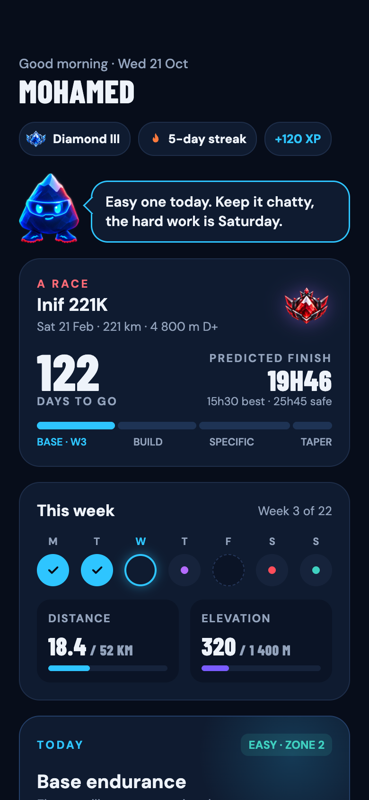
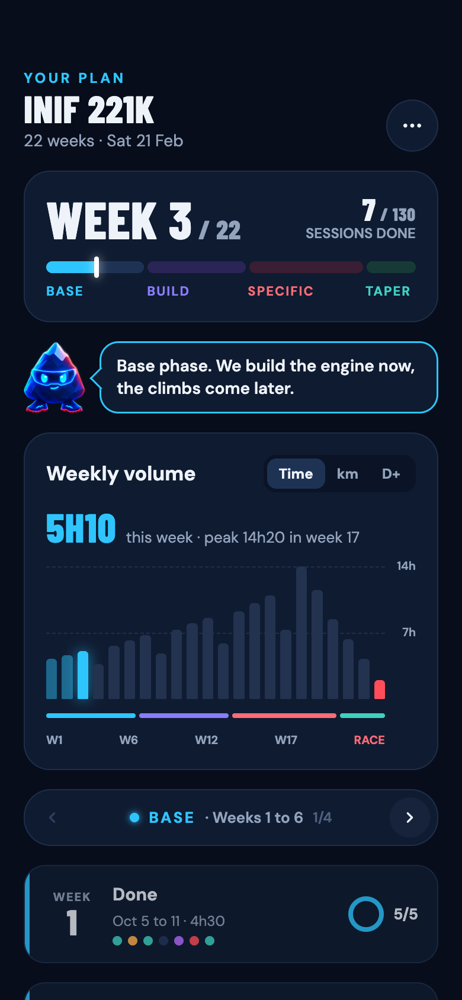
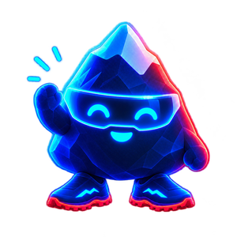
Voilà ta semaine. Aujourd'hui, footing facile, tu dois pouvoir parler.
Toutes les courses, tous les formats, une seule échelle. Les noms de courses appartiennent à leurs organisateurs ; UltraTrain n'est affilié à aucun d'eux.
Classe ta course
Tape une distance et un dénivelé, ou touche une course. La formule de l'app fait le reste : chaque 100 m de montée compte comme un kilomètre de plus.
Km équivalents
50 km + 1 500 m / 100 = 65 km équivalents
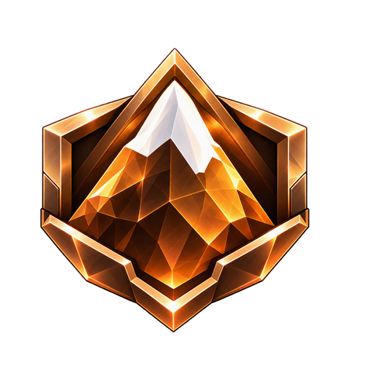
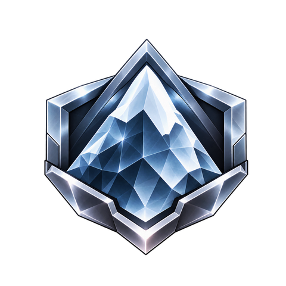
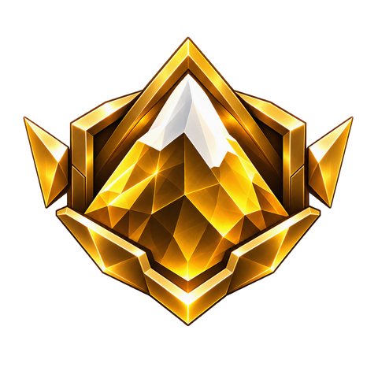
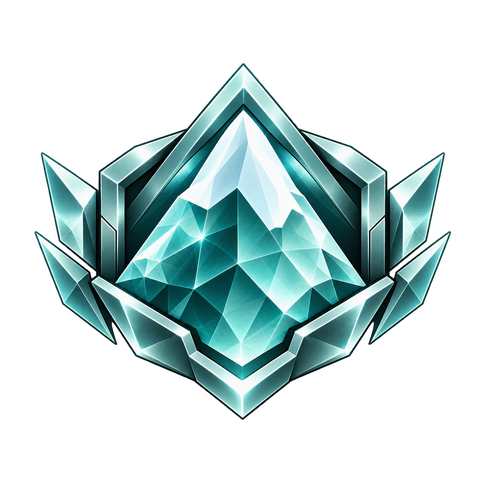
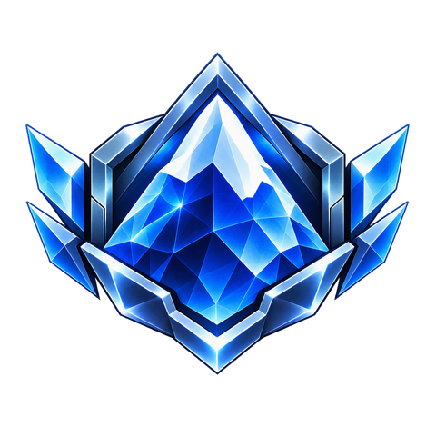
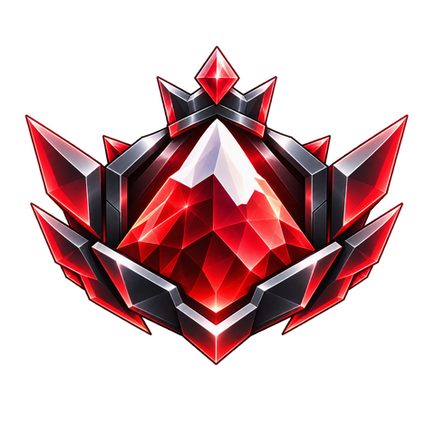
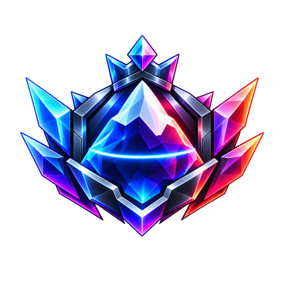
Tier de course
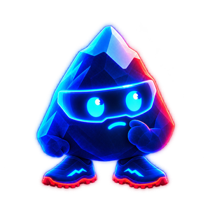
Or. Là, la montée commence à compter. Prépare aussi tes jambes aux descentes.
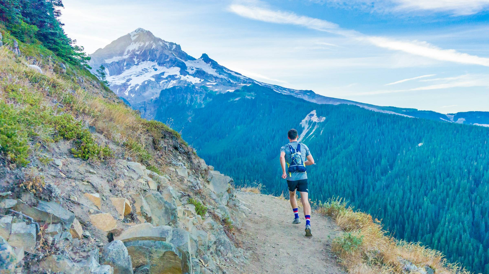
C'est la seule conversion de l'app. Une échelle pour tout le monde, route et montagne, femmes et hommes.
L'échelle
Sept tiers, trois divisions chacun. Ton score de niveau te place, les XP de ton entraînement te font monter, et la vraie vie peut te faire descendre.
Score de niveau sous 350
Là où l'entraînement structuré commence. Courses courtes et premières sorties longues.
500 XP par division
350 à 450
Des semaines régulières et un premier 50K en vue.
900 XP par division
450 à 550
Une base solide et du vrai dénivelé dans tes semaines.
1 400 XP par division
550 à 650
Le 100 km est un objectif, pas un rêve. Sans ultra terminé, ton rang s'arrête ici.
2 000 XP par division
650 à 750
Demande un ultra terminé dans ton historique. À partir d'ici, ce sont les résultats qui parlent.
2 800 XP par division
750 à 850
Tête de course sur les longs formats en montagne.
4 400 XP par division
850 et plus
Une seule division. Le sommet de l'échelle.
Aucune division au-dessus
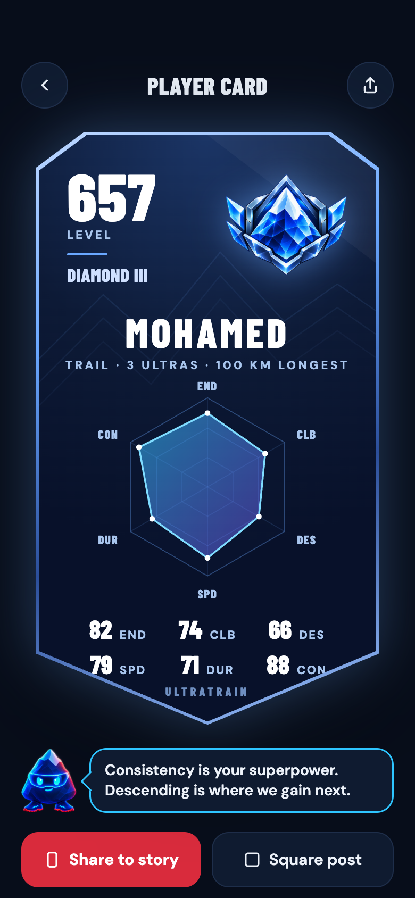
La carte joueur
Le rang montre ce que tu as gagné. La carte montre ce que tu sais faire : endurance, montée, descente, vitesse, résistance et régularité, le tout calculé depuis tes sorties.
Comment ça marche
Une question par écran, pas de formulaire. Où tu cours, quels ultras te tentent, tes meilleurs chronos, combien de jours par semaine tu peux t'entraîner. « Je ne sais pas » est toujours une réponse.
Tes réponses te placent sur l'échelle. Choisis une course, un premier ultra ou juste un bloc de forme, et le plan se construit à rebours depuis le jour de course.
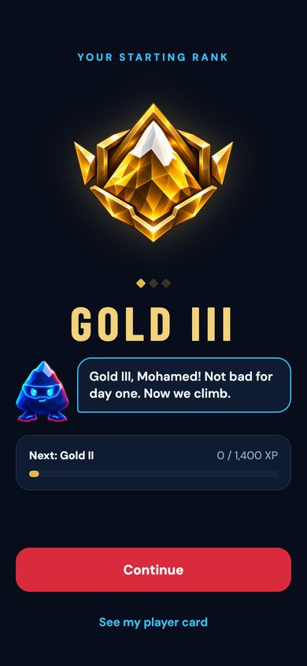
Chaque sortie et chaque séance terminée rapporte des XP. Les jours de repos validés aussi. Termine une course et ton niveau est recalculé. Arrête-toi des semaines et le rang glisse, comme dans la vraie vie.
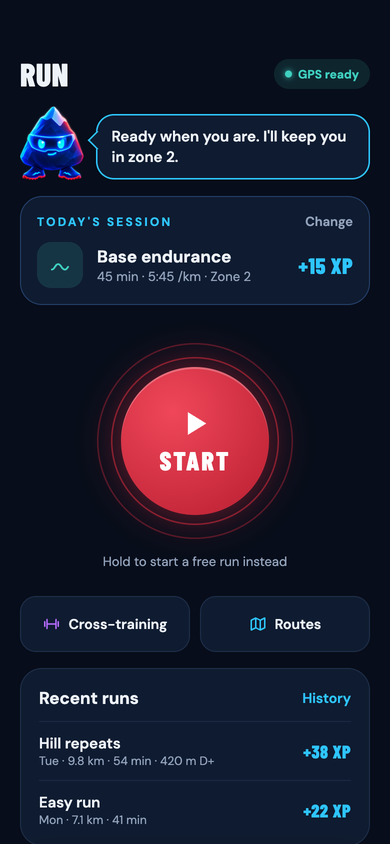
Ton plan
Choisis une course et une date. Les phases se dimensionnent comme dans l'app : un affûtage à la mesure de la course, une phase spécifique avant, une base encore avant, des semaines de récupération entre les deux.
Cette semaine, tu as...
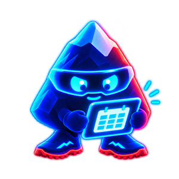
Bonne semaine. Garde les jours faciles faciles, le jour dur, c'est samedi.
Partage tes sorties
Vingt-neuf modèles dessinés à partir des données de ta sortie : la trace, la montée, les splits, le sommet. Chacun garde une zone privée de 300 m autour de ton départ et de ton arrivée.
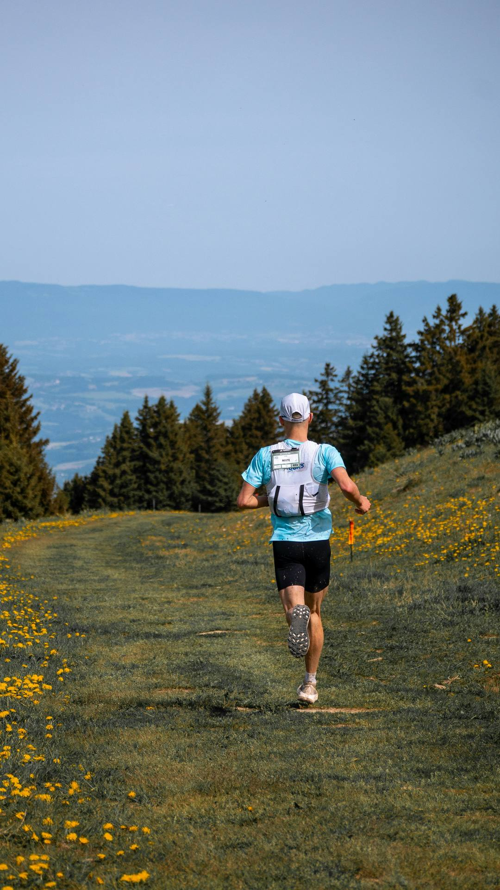
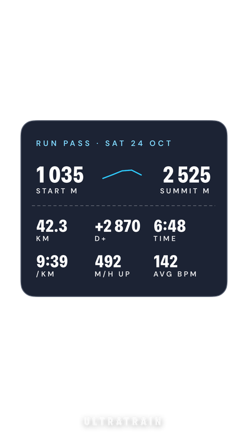
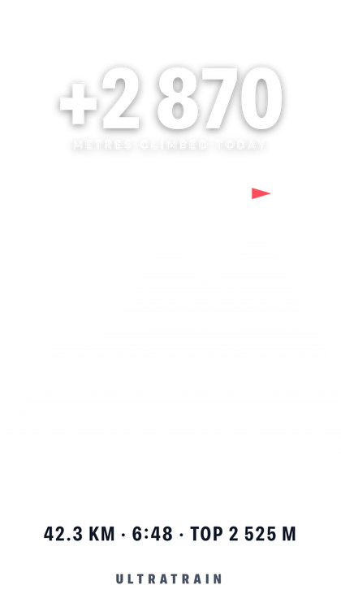
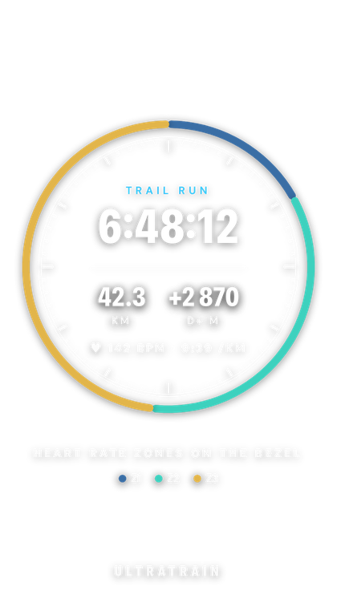
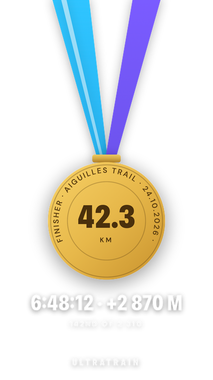
Comme le sélecteur de l'app
Ta ligne GPS et quatre chiffres. Le classique.
Balaie le téléphone ou touche un modèle. Sortie d'exemple sur chaque overlay. Exporte en story, en post carré, ou en sticker transparent.
Pourquoi UltraTrain
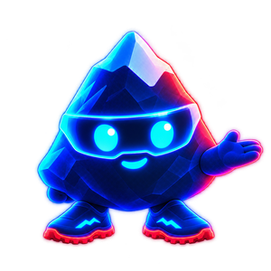
Une échelle pour tout le monde. La même pour les femmes et les hommes, la même pour tous les ultras.
FAQ
UltraTrain est un abonnement acheté dans l'app : 14,99 € par mois ou 49,99 € par an. Il n'y a pas de version gratuite : toute l'app est débloquée dès le premier jour, et tu peux annuler à tout moment depuis tes abonnements App Store.
UltraTrain a sa propre app Apple Watch et lit tes sorties depuis Apple Santé et Strava. Les sorties Garmin, COROS, Suunto et Polar arrivent par Strava ou Apple Santé. La synchronisation directe Garmin et COROS n'est pas encore disponible. Tes sorties terminées peuvent aussi être envoyées vers Strava.
Oui. Le parcours Mon premier ultra t'emmène de ta base actuelle jusqu'à un 50K, 60K, 80K ou 100K, avec des durées minimales sûres. Le rang te place là où tu en es vraiment, et c'est ton premier ultra terminé qui débloque Diamant. Tu peux aussi choisir Juste progresser, sans aucune course.
Les trois. Les plans couvrent du 5 km au marathon sur route ou en trail, les ultras de toute distance et de tout dénivelé, et les formats backyard et à tours éliminatoires, où l'allure est imposée et l'objectif se compte en boucles. Le dénivelé compte toujours : chaque 100 m de montée ajoute un kilomètre d'effort.
Oui. Annule depuis Réglages, ton nom, Abonnements sur ton iPhone. Tu gardes l'accès jusqu'à la fin de la période payée. Tes données restent dans ton iCloud privé jusqu'à ce que tu les supprimes.
Une autre question ? Écris à support@ultratrain.app, un humain te répond.
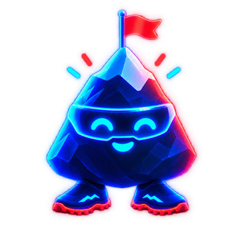
Télécharge UltraTrain, réponds aux questions d'Ultra, et découvre où tu en es.